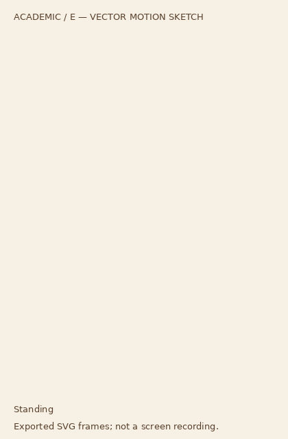
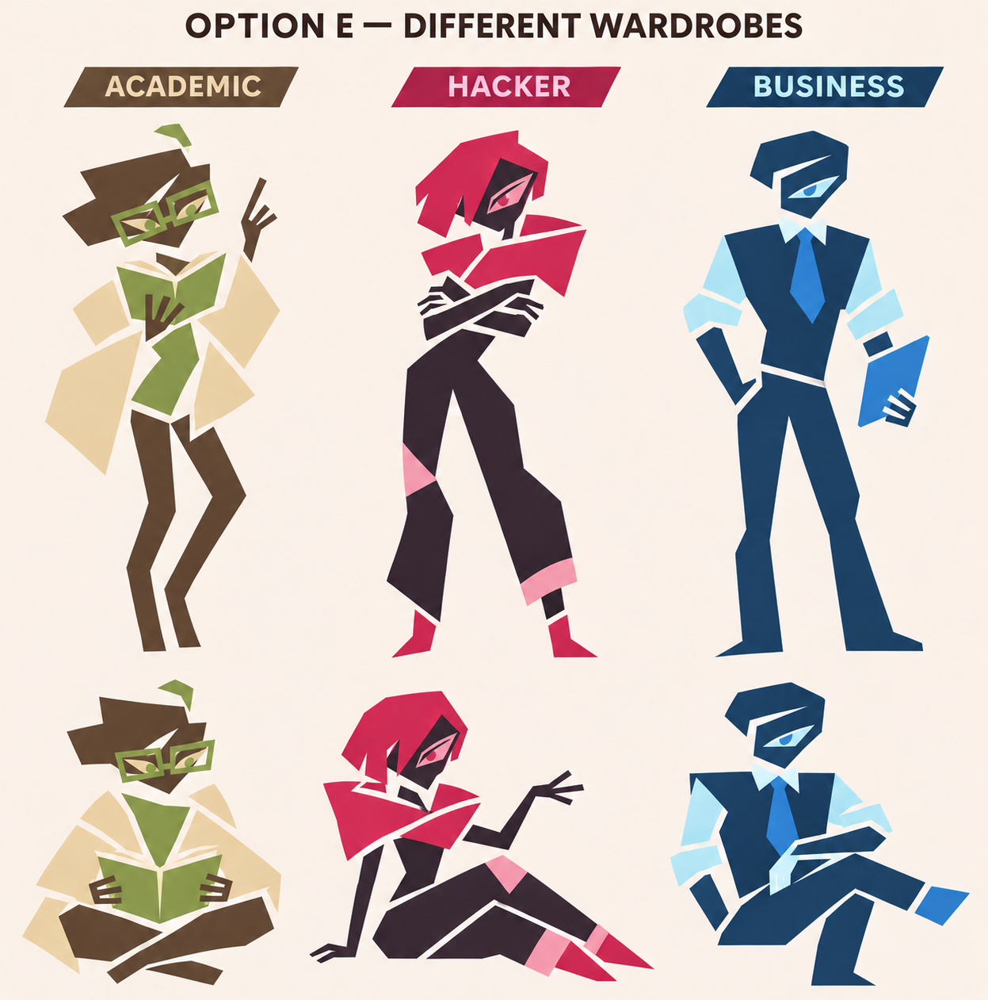

CHARACTER STUDY / E · 01
Room for
individuals.
Three perspectives. Their own interests, judgment, and quirks.
A working visual proof, built from editable shapes.
A WAY OF THINKING
Academic
SCRIPTED SAMPLE · NO AUDIOAppearance preview. No models are loaded and no computer actions run.
Ready to explore.
Exported Academic motion sketch · 12 seconds · no audio
A vector export for reference; the live controls above use the reusable components.

01 / POSE LIBRARY
More than a resting face.
Standing and seated from E.
Explaining and thinking, newly
explored.

Compare with the selected E reference

02 / SMALL IDENTITIES
A face. A signature.
Face cards and role motifs.
24, 48, and 96 pixel studies.

03 / AGENT PRESENCE
Know who has the pointer.
Role color plus a personal mark.
Browser proof · OS integration
comes later.

ACADEMIC / ARROW
Try the pointer here.Move over the pad, or play the sample on touch.
Illustrated agent pointer; your normal cursor stays visible.